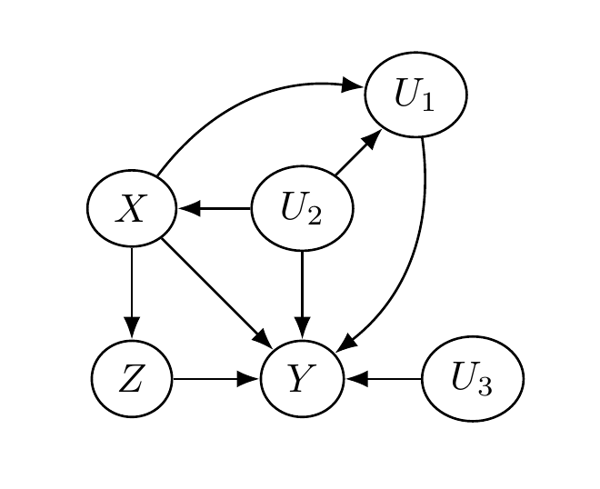
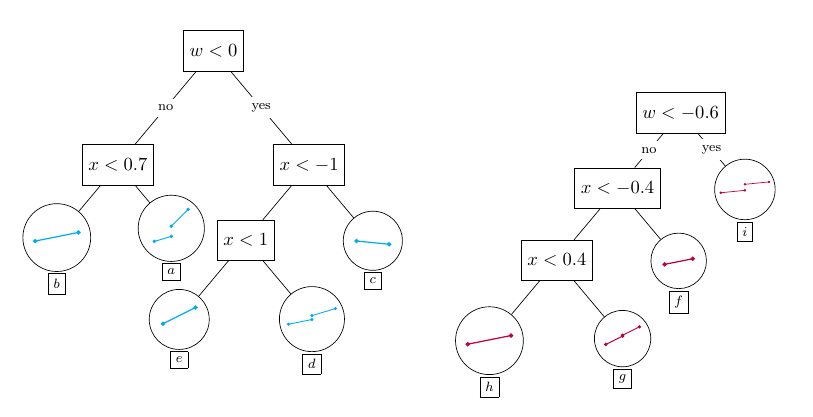
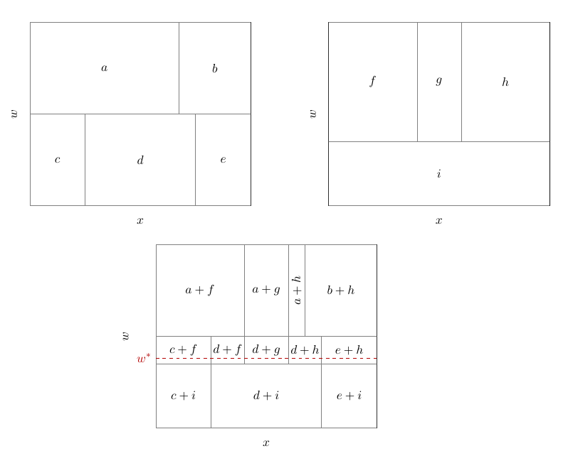
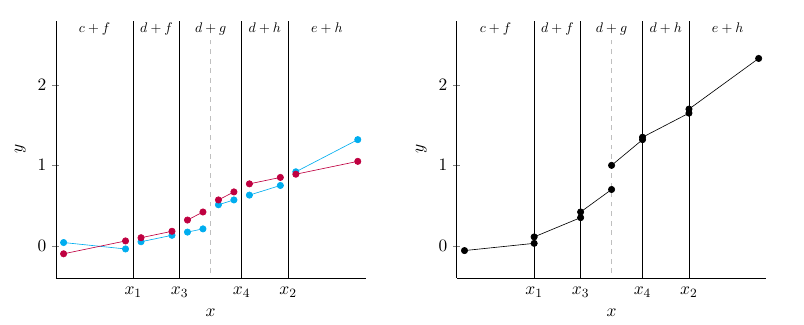
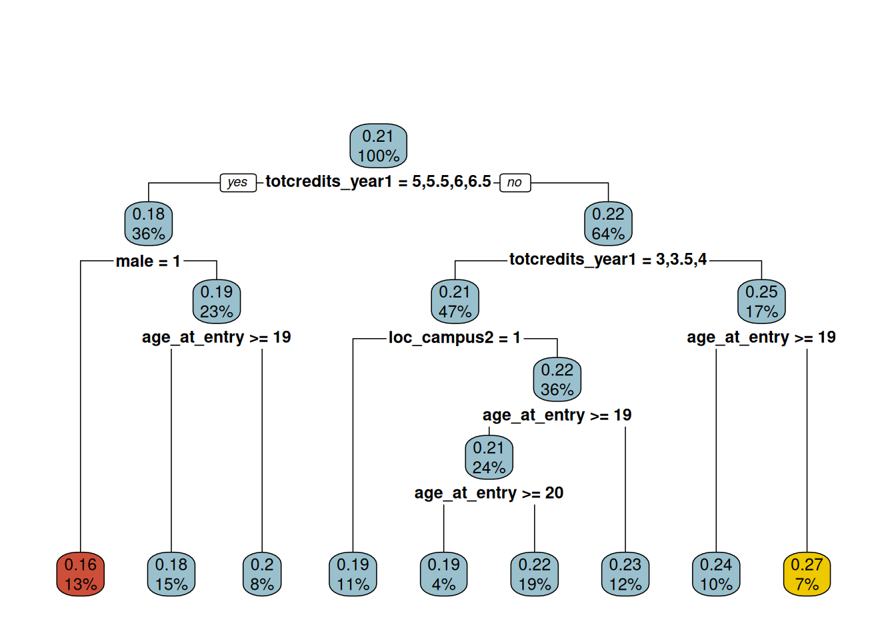
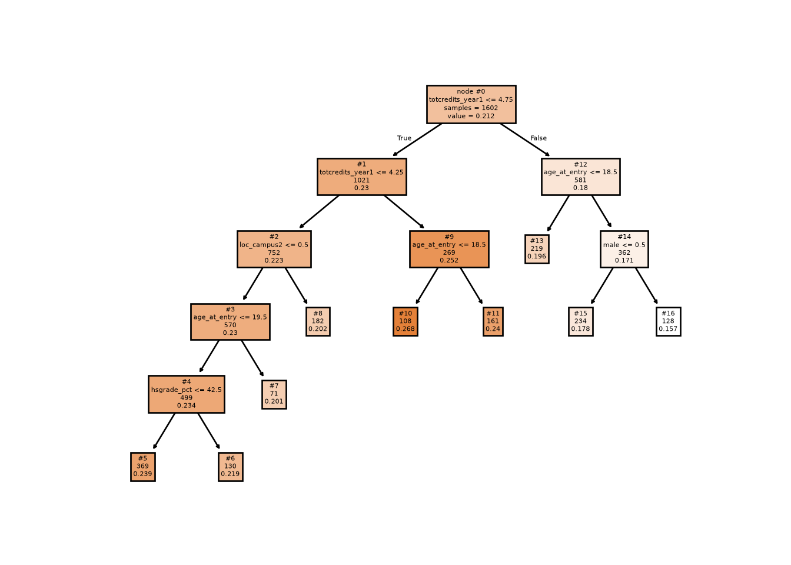
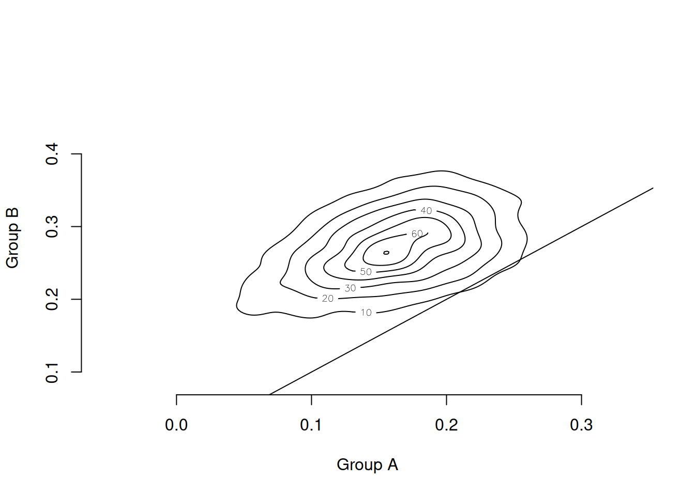
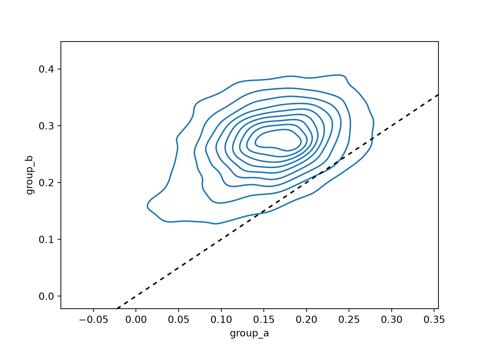

library(stochtree)
library(rpart)
library(rpart.plot)
library(foreach)
library(doParallel)Regression Discontinuity Design (RDD) with StochTree
\[ \newcommand{\ind}{\perp \!\!\! \perp} \newcommand{\B}{\mathcal{B}} \newcommand{\res}{\mathbf{r}} \newcommand{\m}{\mathbf{m}} \newcommand{\x}{\mathbf{x}} \newcommand{\N}{\mathrm{N}} \newcommand{\w}{\mathrm{w}} \newcommand{\iidsim}{\stackrel{\mathrm{iid}}{\sim}} \newcommand{\V}{\mathbb{V}} \newcommand{\F}{\mathbf{F}} \newcommand{\Y}{\mathbf{Y}} \]
Introduction
We study conditional average treatment effect (CATE) estimation for regression discontinuity designs (RDD), in which treatment assignment is based on whether a particular covariate — referred to as the running variable — lies above or below a known value, referred to as the cutoff value. Because treatment is deterministically assigned as a known function of the running variable, RDDs are trivially deconfounded: treatment assignment is independent of the outcome variable, given the running variable. However, estimation of treatment effects in RDDs is more complicated than simply controlling for the running variable, because doing so introduces a complete lack of overlap. Nonetheless, the CATE at the cutoff, \(X=c\), may still be identified provided the conditional expectation \(E[Y \mid X,W]\) is continuous at that point for all \(W=w\). We exploit this assumption with the leaf regression BART model implemented in stochtree, which allows us to define an explicit prior on the CATE.
Regression Discontinuity Design
We conceptualize the treatment effect estimation problem via a quartet of random variables \((Y, X, Z, U)\). The variable \(Y\) is the outcome variable; \(X\) is the running variable; \(Z\) is the treatment assignment indicator; and \(U\) represents additional, possibly unobserved, causal factors. What makes this an RDD is the stipulation that \(Z = I(X > c)\) for cutoff \(c\). We assume \(c = 0\) without loss of generality.
The following figure depicts a causal diagram representing the assumed causal relationships between these variables. Two key features are: (1) \(X\) blocks the impact of \(U\) on \(Z\), satisfying the back-door criterion; and (2) \(X\) and \(U\) are not descendants of \(Z\).

Using this causal diagram, we may express \(Y\) as some function of its graph parents \((X,Z,U)\): \(Y = \F(X,Z,U)\). We relate this to the potential outcomes framework via
\[ Y^1 = \F(X,1,U), \qquad Y^0 = \F(X,0,U). \]
Defining conditional expectations \[ \mu_1(x) = E[Y \mid X=x, Z=1], \qquad \mu_0(x) = E[Y \mid X=x, Z=0], \] the treatment effect function is \(\tau(x) = \mu_1(x) - \mu_0(x)\). Because \(Z = I(X > 0)\), we can only learn \(\mu_1(x)\) for \(X > 0\) and \(\mu_0(x)\) for \(X < 0\). Overlap is violated, so the overall ATE \(\bar{\tau} = E(\tau(X))\) is unidentified. We instead estimate \(\tau(0) = \mu_1(0) - \mu_0(0)\), which is identified for continuous \(X\) under the assumption that \(\mu_1\) and \(\mu_0\) are suitably smooth at \(x = 0\).
Conditional Average Treatment Effects in RDD
We are concerned with learning not only \(\tau(0)\) but also RDD CATEs, \(\tau(0, \w)\) for covariate vector \(\w\). Defining potential outcome means
\[ \mu_z(x,\w) = E[Y \mid X=x, W=\w, Z=z], \]
our treatment effect function is \(\tau(x,\w) = \mu_1(x,\w) - \mu_0(x,\w)\). We must assume \(\mu_1(x,\w)\) and \(\mu_0(x,\w)\) are suitably smooth in \(x\) for every \(\w\). CATE estimation in RDDs then reduces to estimating \(E[Y \mid X=x, W=\w, Z=z]\), for which we turn to BART.
The BARDDT Model
We propose a BART model where the trees split on \((x,\w)\) but each leaf node parameter is a vector of regression coefficients tailored to the RDD context. Let \(\psi\) denote the following basis vector: \[ \psi(x,z) = \begin{bmatrix} 1 & zx & (1-z)x & z \end{bmatrix}. \]
The prediction function for tree \(j\) is defined as \(g_j(x, \w, z) = \psi(x, z) \Gamma_{b_j(x, \w)}\) for leaf-specific regression vector \(\Gamma_{b_j} = (\eta_{b_j}, \lambda_{b_j}, \theta_{b_j}, \Delta_{b_j})^t\). The model for observations in leaf \(b_j\) is
\[ \Y_{b_j} \mid \Gamma_{b_j}, \sigma^2 \sim \N(\Psi_{b_j} \Gamma_{b_j}, \sigma^2), \qquad \Gamma_{b_j} \sim \N(0, \Sigma_0), \]
where we set \(\Sigma_0 = \frac{0.033}{J}\mathrm{I}\) as a default (for \(x\) standardized to unit variance in-sample).
This choice of basis entails that the RDD CATE at \(\w\), \(\tau(0, \w)\), is the sum of the \(\Delta_{b_j(0, \w)}\) elements across all trees:
\[ \tau(0, \w) = \sum_{j=1}^J \Delta_{b_j(0, \w)}. \]
The priors on the \(\Delta\) coefficients directly regularize the treatment effect.
The following figures illustrate how BARDDT fits a response surface and estimates CATEs.



An interesting property of BARDDT: by letting the regression trees split on the running variable, there is no need to separately define a bandwidth as in polynomial RDD. The regression trees automatically determine (in the course of posterior sampling) when to prune away regions far from the cutoff.
Demo
In this section, we provide code for implementing BARDDT in stochtree on a popular RDD dataset.
Setup
Load the necessary packages
import matplotlib.pyplot as plt
import seaborn as sns
import numpy as np
import pandas as pd
from sklearn.tree import DecisionTreeRegressor, plot_tree
from stochtree import BARTModelSet a seed for reproducibility
random_seed <- 1234
set.seed(random_seed)random_seed = 1234
rng = np.random.default_rng(random_seed)Dataset
The data comes from Lindo et al. (2010), who analyze data on college students at a large Canadian university to evaluate an academic probation policy. Students whose GPA falls below a threshold are placed on academic probation. The running variable \(X\) is the negative distance between a student’s previous-term GPA and the probation threshold, so students on probation (\(Z = 1\)) have positive scores and the cutoff is 0. The outcome \(Y\) is the student’s GPA at the end of the current term. Potential moderators \(W\) are: gender (male), age at university entry (age_at_entry), a dummy for being born in North America (bpl_north_america), credits taken in the first year (totcredits_year1), campus indicators (loc_campus 1–3), and high school GPA quantile (hsgrade_pct).
# Load and organize data
data <- read.csv("https://raw.githubusercontent.com/rdpackages-replication/CIT_2024_CUP/refs/heads/main/CIT_2024_CUP_discrete.csv")
y <- data$nextGPA
x <- data$X
n <- nrow(data)
# Standardize x
x <- x / sd(x)
# Extract covariates
w <- data[, 4:11]
# Encode categorical features as ordered/unordered factors
w$totcredits_year1 <- factor(w$totcredits_year1, ordered = TRUE)
w$male <- factor(w$male, ordered = FALSE)
w$bpl_north_america <- factor(w$bpl_north_america, ordered = FALSE)
w$loc_campus1 <- factor(w$loc_campus1, ordered = FALSE)
w$loc_campus2 <- factor(w$loc_campus2, ordered = FALSE)
w$loc_campus3 <- factor(w$loc_campus3, ordered = FALSE)
# x is normalized so the cutoff occurs at c = 0
c <- 0
# Binarize the running variable into a "treatment" indicator
z <- as.numeric(x > c)
# Window for prediction sample
h <- 0.1
# Define the prediction subset
test <- -h < x & x < h
ntest <- sum(test)# Load and organize data
data = pd.read_csv("https://raw.githubusercontent.com/rdpackages-replication/CIT_2024_CUP/refs/heads/main/CIT_2024_CUP_discrete.csv")
y = data.loc[:, "nextGPA"].to_numpy().squeeze()
x = data.loc[:, "X"].to_numpy().squeeze()
n = data.shape[0]
# Standardize x
x = x / np.std(x)
# Extract covariates
w = data.iloc[:, 3:11]
# Encode categorical features as ordered/unordered factors
w["totcredits_year1"] = pd.Categorical(
w["totcredits_year1"], ordered=True
)
unordered_categorical_cols = [
"male",
"bpl_north_america",
"loc_campus1",
"loc_campus2",
"loc_campus3",
]
for col in unordered_categorical_cols:
w.loc[:, col] = pd.Categorical(w.loc[:, col], ordered=False)
# x is normalized so the cutoff occurs at c = 0
c = 0
# Binarize the running variable into a "treatment" indicator
z = (x > c).astype(float)
# Window for prediction sample
h = 0.1
# Define the prediction subset
test = (-h < x) & (x < h)
ntest = np.sum(test)Target Estimand
Our estimand is the CATE function at \(x = 0\), i.e. \(\tau(0, \w)\). To focus on feasible estimation points, we restrict to observed \(\w_i\) such that \(|x_i| \leq \delta\) (here \(\delta = 0.1\) after standardizing \(X\)). Our estimand is therefore
\[ \tau(0, \w_i) \quad \forall i \text{ such that } |x_i| \leq \delta. \]
Implementing BARDDT
The \(\psi\) basis vector for the leaf regression is \(\psi = [1,\, zx,\, (1-z)x,\, z]\), and the training covariate matrix is \([x,\, W]\). The prediction basis at the cutoff for \(Z=1\) and \(Z=0\) is
\[ \psi_1 = [1, 0, 0, 1], \qquad \psi_0 = [1, 0, 0, 0]. \]
Psi <- cbind(rep(1, n), z * x, (1 - z) * x, z)Psi = np.c_[np.ones(n), z * x, (1 - z) * x, z]Fitting the Model
We run multiple chains and combine their posterior draws. To compute the CATE posterior, we obtain \(Y(z)\) predictions by predicting from the model with \(Z = z\) set in the basis. stochtree provides a function / method (computeContrastBARTModel in R, compute_contrast in Python) for directly computing this contrast from a sampled BART model.
# Define sampling parameters
num_chains <- 4
num_gfr <- 4
num_burnin <- 0
num_mcmc <- 500
# Parameter lists for BART model fit
global_params <- list(
standardize = T,
sample_sigma_global = TRUE,
sigma2_global_init = 0.1,
random_seed = random_seed,
num_threads = 1,
num_chains = num_chains
)
forest_params <- list(
num_trees = 50,
min_samples_leaf = 20,
alpha = 0.95,
beta = 2,
max_depth = 20,
sample_sigma2_leaf = FALSE,
sigma2_leaf_init = 0.1 / 50
)
# Fit the BART model
bart_model <- bart(
X_train = cbind(x, w),
leaf_basis_train = Psi,
y_train = y,
num_gfr = num_gfr,
num_burnin = num_burnin,
num_mcmc = num_mcmc,
general_params = global_params,
mean_forest_params = forest_params
)
# Compute the CATE posterior
Psi0 <- cbind(rep(1, n), rep(0, n), rep(0, n), rep(0, n))[test, ]
Psi1 <- cbind(rep(1, n), rep(0, n), rep(0, n), rep(1, n))[test, ]
covariates_test <- cbind(x = rep(0, n), w)[test, ]
cate_posterior <- computeContrastBARTModel(
bart_model,
X_0 = covariates_test,
X_1 = covariates_test,
leaf_basis_0 = Psi0,
leaf_basis_1 = Psi1,
type = "posterior",
scale = "linear"
)# Define sampling parameters
num_chains = 4
num_gfr = 4
num_burnin = 0
num_mcmc = 500
# Parameter lists for BART model fit
global_params = {
"standardize": True,
"sample_sigma_global": True,
"sigma2_global_init": 0.1,
"random_seed": random_seed,
"num_threads": 1,
"num_chains": num_chains
}
forest_params = {
"num_trees": 50,
"min_samples_leaf": 20,
"alpha": 0.95,
"beta": 2,
"max_depth": 20,
"sample_sigma2_leaf": False,
"sigma2_leaf_init": 0.1 / 50,
}
# Fit the BART model
covariates_train = w
covariates_train.loc[:, "x"] = x
bart_model = BARTModel()
bart_model.sample(
X_train=covariates_train,
leaf_basis_train=Psi,
y_train=y,
num_gfr=num_gfr,
num_burnin=num_burnin,
num_mcmc=num_mcmc,
general_params=global_params,
mean_forest_params=forest_params,
)
# Compute the CATE posterior
Psi0 = np.c_[np.ones(n), np.zeros(n), np.zeros(n), np.zeros(n)][test, :]
Psi1 = np.c_[np.ones(n), np.zeros(n), np.zeros(n), np.ones(n)][test, :]
covariates_test = w.iloc[test, :]
covariates_test.loc[:, "x"] = np.zeros(ntest)
cate_posterior = bart_model.compute_contrast(
X_0=covariates_test,
X_1=covariates_test,
leaf_basis_0=Psi0,
leaf_basis_1=Psi1,
type="posterior",
scale="linear",
)Analyzing CATE Heterogeneity
To summarize the CATE posterior we fit a regression tree to the posterior mean point estimates \(\bar{\tau}_i = \frac{1}{M} \sum_{h=1}^M \tau^{(h)}(0, \w_i)\), using \(W\) as predictors. We restrict to observations with \(|x_i| \leq \delta\).
cate <- rpart(y ~ ., data.frame(y = rowMeans(cate_posterior), w[test, ]),
control = rpart.control(cp = 0.015))
plot_cart <- function(rp) {
fr <- rp$frame
left <- which.min(fr$yval)
right <- which.max(fr$yval)
cols <- rep("lightblue3", nrow(fr))
cols[fr$yval == fr$yval[left]] <- "tomato3"
cols[fr$yval == fr$yval[right]] <- "gold2"
cols
}
rpart.plot(cate, main = "", box.col = plot_cart(cate))
y_surrogate = np.mean(cate_posterior, axis=1)
X_surrogate = w.iloc[test, :]
cp = 0.015
min_impurity_decrease = cp * np.var(y_surrogate)
cate_tree = DecisionTreeRegressor(min_impurity_decrease=min_impurity_decrease)
cate_tree.fit(X=X_surrogate, y=y_surrogate)DecisionTreeRegressor(min_impurity_decrease=np.float64(2.1112270825828327e-05))In a Jupyter environment, please rerun this cell to show the HTML representation or trust the notebook.
On GitHub, the HTML representation is unable to render, please try loading this page with nbviewer.org.
Parameters
Fitted attributes
Decision tree fit to posterior mean CATEs, used as an effect moderation summary.
plot_tree(cate_tree, impurity=False, filled=True,
feature_names=w.columns, proportion=False,
label="root", node_ids=True)
plt.show()
The resulting tree indicates that course load (totcredits_year1) in the academic term leading to probation is a strong moderator of the treatment effect. The tree also flags campus, age at entry, and gender as secondary moderators — all prima facie plausible.
Comparing Subgroup Posteriors
The effect moderation tree is a posterior summary tool; it does not alter the posterior itself. We can compare any two subgroups by averaging their individual posterior draws. Consider the two groups at opposite ends of the effect range:
- Group A: male student, entered college older than 19, attempted > 4.8 credits in the first year (leftmost leaf, red)
- Group B: any gender, entered college younger than 19, attempted 4.3–4.8 credits in the first year (rightmost leaf, gold)
Subgroup posteriors are
\[ \bar{\tau}_A^{(h)} = \frac{1}{n_A} \sum_{i \in A} \tau^{(h)}(0, \w_i), \]
where \(h\) indexes a posterior draw and \(n_A\) is the group size.
cate_kde <- function(rp, pred) {
left <- rp$where == which.min(rp$frame$yval)
right <- rp$where == which.max(rp$frame$yval)
cate_a <- colMeans(pred[left, , drop = FALSE])
cate_b <- colMeans(pred[right, , drop = FALSE])
MASS::kde2d(cate_a, cate_b, n = 200)
}
contour(cate_kde(cate, cate_posterior), bty = "n",
xlab = "Group A", ylab = "Group B")
abline(a = 0, b = 1)
predicted_nodes = cate_tree.apply(X=X_surrogate)
max_value_node = np.argmax(cate_tree.tree_.value)
min_value_node = np.argmin(cate_tree.tree_.value)
posterior_group_a = np.mean(cate_posterior[predicted_nodes == min_value_node, :], axis=0)
posterior_group_b = np.mean(cate_posterior[predicted_nodes == max_value_node, :], axis=0)
posterior_df = pd.DataFrame({"group_a": posterior_group_a,
"group_b": posterior_group_b})
sns.kdeplot(data=posterior_df, x="group_a", y="group_b")
plt.axline((0, 0), slope=1, color="black", linestyle=(0, (3, 3)))
plt.show()
The contour lines are nearly all above the 45° line, indicating that the posterior probability mass lies in the region where Group B has a larger treatment effect than Group A, even after accounting for estimation uncertainty.
As always, CATEs that vary with observable factors do not necessarily represent a causal moderating relationship; uncovering these patterns is crucial for suggesting causal mechanisms to investigate in future studies.
References
Lindo, Jason M, Nicholas J Sanders, and Philip Oreopoulos. 2010. “Ability, Gender, and Performance Standards: Evidence from Academic Probation.” American Economic Journal: Applied Economics 2 (2): 95–117.